#dependencies
from PIL import Image
import numpy as np
import os
import matplotlib.pyplot as plt
from scipy import ndimage
from scipy.signal import wiener
import cv2
import torch
import torch.nn as nn
from torch.optim import Adam, lr_scheduler
import io
from nbformat import current
import globAnalysis of Unsupervised Denoising Methods
Samuel Herold
Introduction
Abstract
Image denoising is a classic problem in computer vision and image processing. The goal is simple: to remove noise from a noisy image and recover the underlying image. The problem statement is often written as x ̂=x+n, where x ̂ is the observed image, n is additive noise and x is the ground truth image that we hope to recover. Often times, we do not have access to any x (ground truth) images, making the problem unsupervised. There are many ways people have attempted to do unsupervised denoising, and I will be exploring the most popular in this paper.
Background
Noisy images are very prevalent in engineering, biology, and many other areas, making denoising very important and heavily researched. I was introduced to the world of image denoising during an undergraduate research project in the Department of Electrical Engineering, with Dr. Jesse Wilson and his lab. Their new laser scan technology produces biomedical images that contain a significant amount of noise. Their images will also always contain noise (due to the electronics, the nature of light, laser exposure limits, etc.), meaning there is no access to any ground truth images ever. This led to questions about unsupervised denoising options.
The labs current approach is stack averaging (taking multiple images of the same thing, then averaging them). This method is consistent, but costly, slow, and can damage the sample. This begged for an instant denoising method. My research task was to investigate the deep learning Noise2Noise framework. I will discuss this method later on in this paper.
My goal with this paper is to investigate unsupervised denoisers, both traditional and in deep learning, and use some of them on the biomedical data from the lab.
Dataset Notes
I will be trying some of these methods on the noisy images collected from Dr. Jesse Wilson’s lab. These are a collection of 128x128 grayscale images, who’s pixel values are centered around zero, not between 0 and 255. We also believe the noise on the images is additive and gaussian.
Methods and Frameworks
The first methods I will be looking at do not involve machine learning, so I will not go into as much detail as I will with Noise2Noise and its variants.
#load data
X = []
path = "2023-08-30-FullDataSet"
for image_class in os.listdir(path):
sameBaseImages = []
image_path = os.path.join(path, image_class)
img = np.array(Image.open(image_path))
X.append(img)def plot(original, denoised, title):
plt.figure(figsize=(5, 5))
plt.subplot(121)
plt.imshow(original)
plt.title('Original Image')
plt.axis('off')
plt.subplot(122)
plt.imshow(denoised)
plt.title(title)
plt.axis('off')
plt.show()Linear Filtering
Linear filtering is the most straightforward way to denoise. This method involves sliding a moving window or kernel over each pixel in the image. Some operation is done on that window (i.e. mean, median), and the center pixel is replaced with the outcome of that operation. All of these filters have hyperparameters that you can tune for your images.
Mean Filter: Take the mean of every surrounding pixel in the kernel and replace the center pixel with the mean.
Median Filter: Take the median of every surrounding pixel in the kernel and replace the center pixel with the mean.
Gaussian Filter:
Weiner Filter:
Mean Filtering
kernel_size = (6, 6)
filtered = ndimage.uniform_filter(X[0], size=kernel_size)
plot(X[0], filtered, 'Mean Filtered Image')
filtered = ndimage.uniform_filter(X[1], size=kernel_size)
plot(X[1], filtered, 'Mean Filtered Image')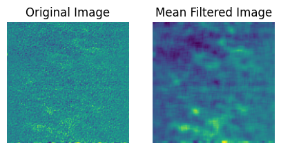
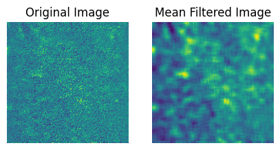
Median Filtering
filtered = ndimage.median_filter(X[0], size=4)
plot(X[0], filtered, 'Median Filtered Image')
filtered = ndimage.median_filter(X[1], size=4)
plot(X[1], filtered, 'Median Filtered Image')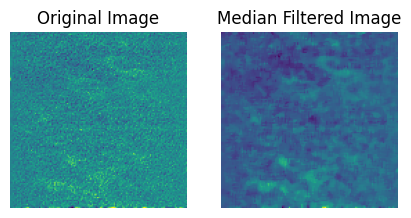
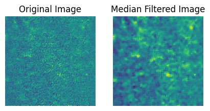
Gaussian Filtering
filtered = ndimage.gaussian_filter(X[0], sigma = 2)
plot(X[0], filtered, 'Gaussian Filtered Image')
filtered = ndimage.gaussian_filter(X[1], sigma = 2)
plot(X[1], filtered, 'Gaussian Filtered Image')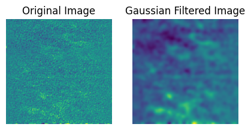
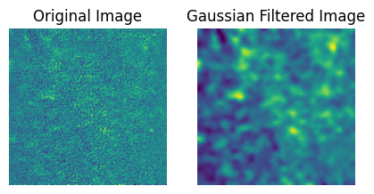
Wiener Filtering
filtered = wiener(X[0],noise = 5)
plot(X[0], filtered, 'Wiener Filtered Image')
filtered = wiener(X[1],noise = 5)
plot(X[1], filtered, 'Wiener Filtered Image')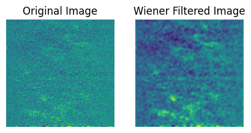
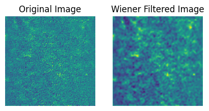
Pros:
- Simple to understand.
- Simple to implement.
- Only need one image.
- Sensitive to hyperparameters.
- Versatile. #### Cons:
- Poor performance.
- Only uses local information.
- Only can use one image even if others are available.
- Bad with edges.
Other Filters
These methods up the complexity and use information from the whole image. This increases performance and edge preservation.
Non-Local Means: Uses patches of similar makeup from other parts of the image for averaging a window. This average is weighted by how similar the image patches are.
Bilateral Filtering: Uses a weighted average where spatial distance and pixel intensity are considered in weighting.
Non-Local Means
normalized = ((X[0] - X[0] .min()) / (X[0] .max() - X[0] .min()) * 255).astype(np.uint8)
NL = cv2.fastNlMeansDenoising(normalized, None, h=18, templateWindowSize=9, searchWindowSize=100)
plot(X[0], NL, 'Wiener Filtered Image')
normalized = ((X[1] - X[1] .min()) / (X[1] .max() - X[1] .min()) * 255).astype(np.uint8)
NL = cv2.fastNlMeansDenoising(normalized, None, h=18, templateWindowSize=9, searchWindowSize=100)
plot(X[1], NL, 'Wiener Filtered Image')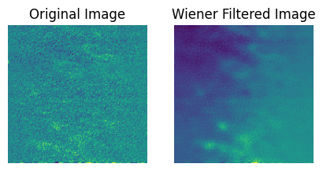
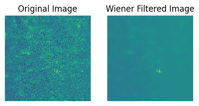
Bilateral filtering
normalized = ((X[0] - X[0] .min()) / (X[0] .max() - X[0] .min()) * 255).astype(np.uint8)
bilateral = cv2.bilateralFilter(normalized, d=4, sigmaColor=75, sigmaSpace=75)
plot(X[0], bilateral, 'Wiener Filtered Image')
normalized = ((X[1] - X[1] .min()) / (X[1] .max() - X[1] .min()) * 255).astype(np.uint8)
bilateral = cv2.bilateralFilter(normalized, d=6, sigmaColor=75, sigmaSpace=75)
plot(X[1], bilateral, 'Wiener Filtered Image')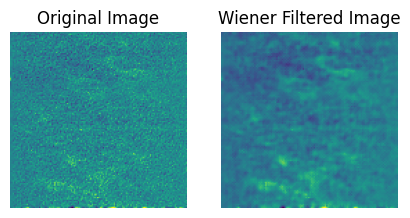
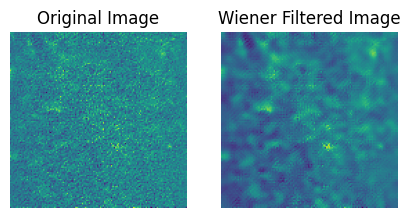
Pros:
- Simple to implement.
- Increased performance over simple filtering.
- Require only one image.
- Versatile. #### Cons:
- Decently complex to understand.
- Very sensitive to its parameters.
- Struggles with edge preservation.
- Might create blurring/artifacts.
BM3D
Noise2Noise
It is seemingly obvious that a neural network could learn to denoise images if trained on noisy input images with clean targets (the network learns how to go from noisy to clean). Call this Noise2Clean. However, it is often difficult, costly or impossible to get clean image targets. Noise2Noise is a deep learning framework that uses only noisy images to denoise images, and rivals the performance of the aforementioned noisy to clean method. This framework was proposed in NVidias 2018 paper, “Noise2Noise: Learning Image Restoration without Clean Data.”
Noise2Noise uses noisy images as both the model input and the target. Through an interesting realization in math, this is essentially the same as using a clean image target. The model will try to predict the noisy target and fail. The best that it can do (while still reducing training loss) is predict the underlying, clean image.
Another way to think about it is with gradients. The gradient does not point exactly to the clean image, but rather many gradients point to images that average to the underlying clean images. In other words, the average gradient points to the unobserved clean image. In theory, the model will converge to the expected value of the noisy image.
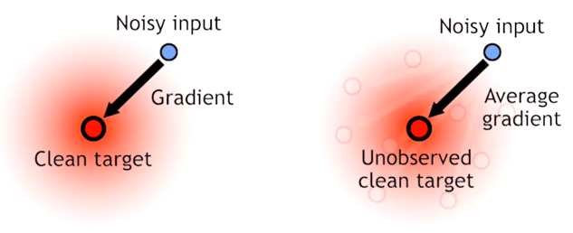
There are some serious benefits to using Noise2Noise. If you have noisy image pairs, this will likely give the best denoising that you can ask for. Unlike the denoisers seen before this, this model can use information from multiple images. Just based off that, it makes sense that this framework will outperform algorithms that use just one image.
Noise2Noise uses a U-NET architecture. Essentially, U-NET is an image to image convolutional neural network. The inputs and outputs are both images.
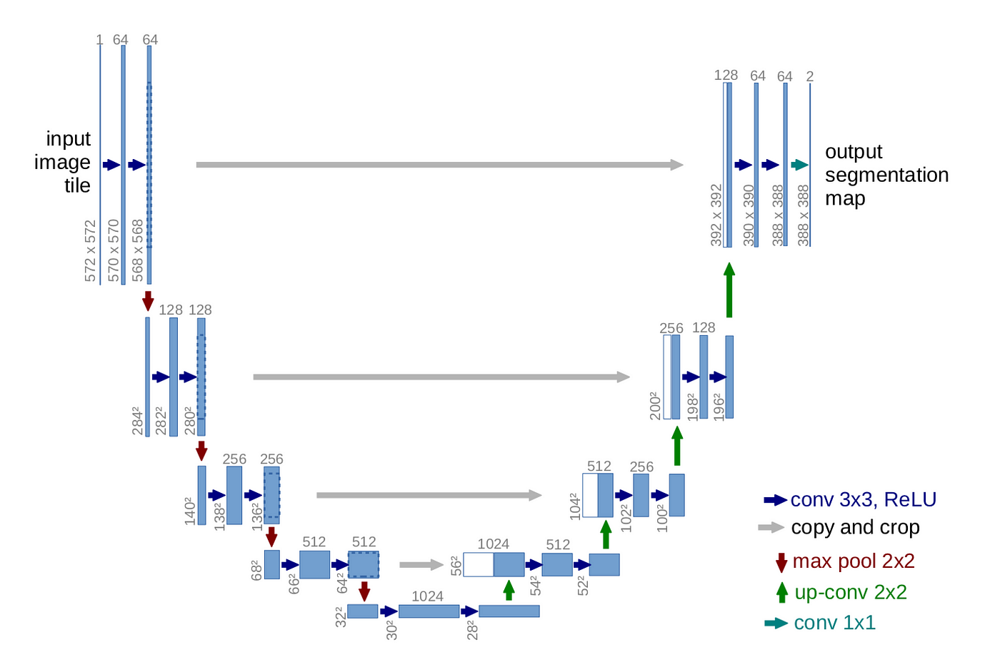
As you can see, UNET gets its name from its shape. In essence, it squeezes images down (encoding) to extract information, then builds them back up (decoding) to predict the target. The encoder section is a series of convolutional and max-pooling layers, and the decoder is a series of up sampling layers. Another important aspect of UNET is its skip connections (arrows across the top). These basically give the decoder some information about the structure at different stages of encoding that it can use if needed.
- Encoder
- Convolutional layer(s) followed by max pooling layer
- Extracts and separates information
- Decoder
- Convolutional layer and transpose convolutional layer.
- Up samples feature maps and combines them to predict the final image.
- Skip Connections
- Connect layers of the the encoder to layers of the decoder
- Provide information that may be useful information from earlier layers.
- This makes extra sense for Noise2Noise, as the target image is very similar to the input image.
Below is an implementation of the UNET (in pytorch) used in Noise2Noise. This was taken from the Noise2Noise github page. This is a fairly complex model as you can see.
#Unet pulled from Noise2Noise Github Repo
class UNet(nn.Module):
"""Custom U-Net architecture for Noise2Noise (see Appendix, Table 2)."""
def __init__(self, in_channels=1, out_channels=1):
"""Initializes U-Net."""
super(UNet, self).__init__()
# Layers: enc_conv0, enc_conv1, pool1
self._block1 = nn.Sequential(
nn.Conv2d(in_channels, 48, 3, stride=1, padding=1),
nn.ReLU(inplace=True),
nn.Conv2d(48, 48, 3, padding=1),
nn.ReLU(inplace=True),
nn.MaxPool2d(2))
# Layers: enc_conv(i), pool(i); i=2..5
self._block2 = nn.Sequential(
nn.Conv2d(48, 48, 3, stride=1, padding=1),
nn.ReLU(inplace=True),
nn.MaxPool2d(2))
# Layers: enc_conv6, upsample5
self._block3 = nn.Sequential(
nn.Conv2d(48, 48, 3, stride=1, padding=1),
nn.ReLU(inplace=True),
nn.ConvTranspose2d(48, 48, 3, stride=2, padding=1, output_padding=1))
#nn.Upsample(scale_factor=2, mode='nearest'))
# Layers: dec_conv5a, dec_conv5b, upsample4
self._block4 = nn.Sequential(
nn.Conv2d(96, 96, 3, stride=1, padding=1),
nn.ReLU(inplace=True),
nn.Conv2d(96, 96, 3, stride=1, padding=1),
nn.ReLU(inplace=True),
nn.ConvTranspose2d(96, 96, 3, stride=2, padding=1, output_padding=1))
#nn.Upsample(scale_factor=2, mode='nearest'))
# Layers: dec_deconv(i)a, dec_deconv(i)b, upsample(i-1); i=4..2
self._block5 = nn.Sequential(
nn.Conv2d(144, 96, 3, stride=1, padding=1),
nn.ReLU(inplace=True),
nn.Conv2d(96, 96, 3, stride=1, padding=1),
nn.ReLU(inplace=True),
nn.ConvTranspose2d(96, 96, 3, stride=2, padding=1, output_padding=1))
#nn.Upsample(scale_factor=2, mode='nearest'))
# Layers: dec_conv1a, dec_conv1b, dec_conv1c,
self._block6 = nn.Sequential(
nn.Conv2d(96 + in_channels, 64, 3, stride=1, padding=1),
nn.ReLU(inplace=True),
nn.Conv2d(64, 32, 3, stride=1, padding=1),
nn.ReLU(inplace=True),
nn.Conv2d(32, out_channels, 3, stride=1, padding=1),
nn.LeakyReLU(0.1))
# Initialize weights
self._init_weights()
def _init_weights(self):
"""Initializes weights using He et al. (2015)."""
for m in self.modules():
if isinstance(m, nn.ConvTranspose2d) or isinstance(m, nn.Conv2d):
nn.init.kaiming_normal_(m.weight.data)
m.bias.data.zero_()
def forward(self, x):
"""Through encoder, then decoder by adding U-skip connections. """
# Encoder
pool1 = self._block1(x)
pool2 = self._block2(pool1)
pool3 = self._block2(pool2)
pool4 = self._block2(pool3)
pool5 = self._block2(pool4)
# Decoder
upsample5 = self._block3(pool5)
concat5 = torch.cat((upsample5, pool4), dim=1)
upsample4 = self._block4(concat5)
concat4 = torch.cat((upsample4, pool3), dim=1)
upsample3 = self._block5(concat4)
concat3 = torch.cat((upsample3, pool2), dim=1)
upsample2 = self._block5(concat3)
concat2 = torch.cat((upsample2, pool1), dim=1)
upsample1 = self._block5(concat2)
concat1 = torch.cat((upsample1, x), dim=1)
# Final activation
return self._block6(concat1)Now I will create noisy inputs and targets from the .tif stacks I have. I will be using 4 images with 10 noisy instances each for testing. I could do more, but I have limited access to gpus, and I want to see if this is realistic for someone to use in the field.
import os
import random
import torch
path = '2023-08-30-FullDataSet'
X = []
y = []
for ind, image_class in enumerate(os.listdir(path)):
sameBaseImages = []
image_path = os.path.join(path, image_class)
tif = Image.open(image_path)
for i in range(10):
tif.seek(i)
img = np.array(tif)
sameBaseImages.append(img)
shuffled_images = sameBaseImages.copy()
random.shuffle(shuffled_images)
X.append(shuffled_images)
y.append(sameBaseImages)
if ind == 3:
break
X = np.array([item for row in X for item in row])
y = np.array([item for row in y for item in row])
plt.subplot(121)
plt.imshow(X[0])
plt.title("Input")
plt.subplot(122)
plt.imshow(y[0])
plt.title("Target")
X = torch.from_numpy(X)
X = X.unsqueeze(1)
y = torch.from_numpy(y)
y = y.unsqueeze(1)
print("X and y shape: " ,X.shape , y.shape)X and y shape: torch.Size([40, 1, 128, 128]) torch.Size([40, 1, 128, 128])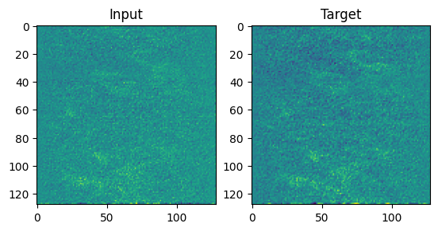
Now initialize and train. We will be using L2 loss (though you can chose other loss metrics), and Adam. An interesing aspect of Noise2Noise is that there is often no validation or test set because the training set output is actually what we want. The traning image outputs are denoised!
model = UNet()
criterion = nn.MSELoss()
optim = Adam(model.parameters())
nb_epochs = 100
denoisedExamples = []
lossTrace = []
for epoch in range(nb_epochs):
denoised = model(X)
denoisedExamples.append(denoised)
loss = criterion(denoised, y)
optim.zero_grad()
loss.backward()
optim.step()
lossTrace.append(loss.item())
print('EPOCH {:d} / {:d}'.format(epoch + 1, nb_epochs) , "Loss: " , loss.item())
print("Training done.")EPOCH 1 / 100 Loss: 0.23062852025032043
EPOCH 2 / 100 Loss: 0.08725607395172119
EPOCH 3 / 100 Loss: 0.0907408818602562
EPOCH 4 / 100 Loss: 0.05743935704231262
EPOCH 5 / 100 Loss: 0.05169619247317314
EPOCH 6 / 100 Loss: 0.051671456545591354
EPOCH 7 / 100 Loss: 0.050681181252002716
EPOCH 8 / 100 Loss: 0.05037490651011467
EPOCH 9 / 100 Loss: 0.051615845412015915
EPOCH 10 / 100 Loss: 0.05123043805360794
EPOCH 11 / 100 Loss: 0.0498960055410862
EPOCH 12 / 100 Loss: 0.049913190305233
EPOCH 13 / 100 Loss: 0.049988217651844025
EPOCH 14 / 100 Loss: 0.04915447160601616
EPOCH 15 / 100 Loss: 0.048705749213695526
EPOCH 16 / 100 Loss: 0.04911578446626663
EPOCH 17 / 100 Loss: 0.048757150769233704
EPOCH 18 / 100 Loss: 0.048235975205898285
EPOCH 19 / 100 Loss: 0.048510245978832245
EPOCH 20 / 100 Loss: 0.04843644052743912
EPOCH 21 / 100 Loss: 0.047936517745256424
EPOCH 22 / 100 Loss: 0.04799273610115051
EPOCH 23 / 100 Loss: 0.04791606217622757
EPOCH 24 / 100 Loss: 0.04738699272274971
EPOCH 25 / 100 Loss: 0.04734427481889725
EPOCH 26 / 100 Loss: 0.047220904380083084
EPOCH 27 / 100 Loss: 0.04683880880475044
EPOCH 28 / 100 Loss: 0.04690384864807129
EPOCH 29 / 100 Loss: 0.04671315476298332
EPOCH 30 / 100 Loss: 0.04649384319782257
EPOCH 31 / 100 Loss: 0.046521060168743134
EPOCH 32 / 100 Loss: 0.046199094504117966
EPOCH 33 / 100 Loss: 0.046181466430425644
EPOCH 34 / 100 Loss: 0.04596741870045662
EPOCH 35 / 100 Loss: 0.04587370529770851
EPOCH 36 / 100 Loss: 0.04576703906059265
EPOCH 37 / 100 Loss: 0.045649901032447815
EPOCH 38 / 100 Loss: 0.04556039348244667
EPOCH 39 / 100 Loss: 0.04548859968781471
EPOCH 40 / 100 Loss: 0.045379430055618286
EPOCH 41 / 100 Loss: 0.04538588598370552
EPOCH 42 / 100 Loss: 0.04523172974586487
EPOCH 43 / 100 Loss: 0.0452665239572525
EPOCH 44 / 100 Loss: 0.04512893408536911
EPOCH 45 / 100 Loss: 0.045129191130399704
EPOCH 46 / 100 Loss: 0.04508353769779205
EPOCH 47 / 100 Loss: 0.04500851780176163
EPOCH 48 / 100 Loss: 0.045030657202005386
EPOCH 49 / 100 Loss: 0.04492993652820587
EPOCH 50 / 100 Loss: 0.0449085608124733
EPOCH 51 / 100 Loss: 0.044878099113702774
EPOCH 52 / 100 Loss: 0.044799622148275375
EPOCH 53 / 100 Loss: 0.044800471514463425
EPOCH 54 / 100 Loss: 0.044752687215805054
EPOCH 55 / 100 Loss: 0.04470478743314743
EPOCH 56 / 100 Loss: 0.044700898230075836
EPOCH 57 / 100 Loss: 0.044654835015535355
EPOCH 58 / 100 Loss: 0.04462192580103874
EPOCH 59 / 100 Loss: 0.04461563006043434
EPOCH 60 / 100 Loss: 0.044577762484550476
EPOCH 61 / 100 Loss: 0.04454680532217026
EPOCH 62 / 100 Loss: 0.044537268579006195
EPOCH 63 / 100 Loss: 0.044510118663311005
EPOCH 64 / 100 Loss: 0.04448220878839493
EPOCH 65 / 100 Loss: 0.044470082968473434
EPOCH 66 / 100 Loss: 0.04445020109415054
EPOCH 67 / 100 Loss: 0.04442272335290909
EPOCH 68 / 100 Loss: 0.04440665990114212
EPOCH 69 / 100 Loss: 0.0443965345621109
EPOCH 70 / 100 Loss: 0.04437878727912903
EPOCH 71 / 100 Loss: 0.044358570128679276
EPOCH 72 / 100 Loss: 0.044346049427986145
EPOCH 73 / 100 Loss: 0.044336557388305664
EPOCH 74 / 100 Loss: 0.04432205855846405
EPOCH 75 / 100 Loss: 0.04430488497018814
EPOCH 76 / 100 Loss: 0.044290341436862946
EPOCH 77 / 100 Loss: 0.04427959769964218
EPOCH 78 / 100 Loss: 0.04426991194486618
EPOCH 79 / 100 Loss: 0.04425866901874542
EPOCH 80 / 100 Loss: 0.04424617439508438
EPOCH 81 / 100 Loss: 0.044232867658138275
EPOCH 82 / 100 Loss: 0.04421982914209366
EPOCH 83 / 100 Loss: 0.04420708492398262
EPOCH 84 / 100 Loss: 0.044194869697093964
EPOCH 85 / 100 Loss: 0.04418356344103813
EPOCH 86 / 100 Loss: 0.044173091650009155
EPOCH 87 / 100 Loss: 0.04416419193148613
EPOCH 88 / 100 Loss: 0.044160064309835434
EPOCH 89 / 100 Loss: 0.04416915029287338
EPOCH 90 / 100 Loss: 0.04421789199113846
EPOCH 91 / 100 Loss: 0.04433950036764145
EPOCH 92 / 100 Loss: 0.04461228474974632
EPOCH 93 / 100 Loss: 0.04465964064002037
EPOCH 94 / 100 Loss: 0.044490642845630646
EPOCH 95 / 100 Loss: 0.044104039669036865
EPOCH 96 / 100 Loss: 0.044214773923158646
EPOCH 97 / 100 Loss: 0.04444906860589981
EPOCH 98 / 100 Loss: 0.04416358470916748
EPOCH 99 / 100 Loss: 0.04408537596464157
EPOCH 100 / 100 Loss: 0.044274769723415375
Training done.plt.scatter(np.arange(nb_epochs), lossTrace)
plt.title('Training Loss Trace')
plt.xlabel('Epoch')
plt.ylabel('MSE')
#plt.ylim(0, .1)
plt.show()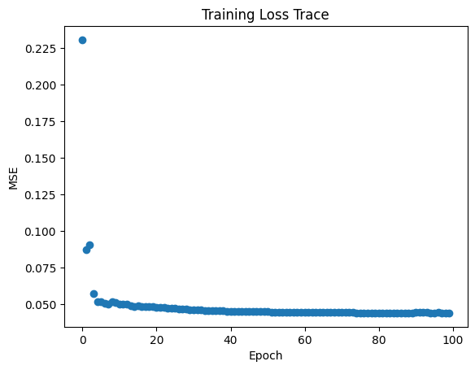
num_images = nb_epochs
num_rows, num_cols = (5,4)
plt.figure(figsize=(10,10))
for i in range(nb_epochs):
if i % 5 == 0:
plt.subplot(num_rows, num_cols, i// 5 + 1)
plt.imshow(denoisedExamples[i].detach().numpy()[0].reshape(128,128), cmap='gray')
plt.title(f'Epoch {i+1}')
plt.axis('off')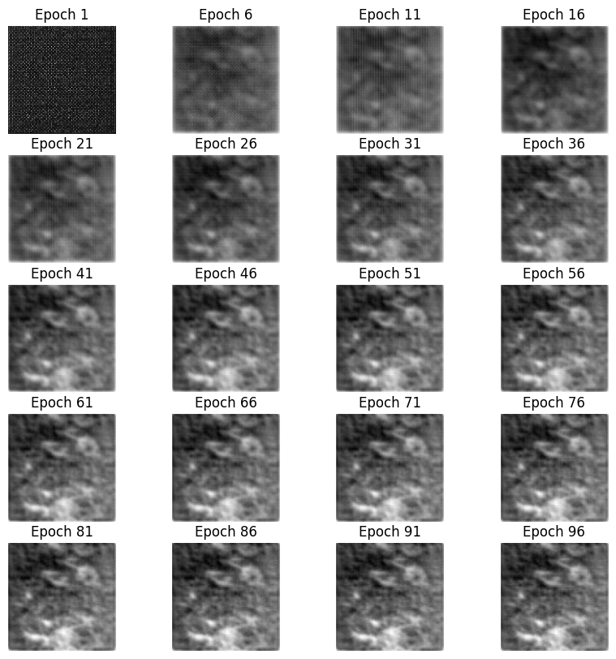
With a capture budget of 10 noisy instances for 4 images (40 total images), we can get very good denoising results. We do not need to know the noise distribution, the model learns it for us.
An issue with this method is inference on new images. That is what some of my research has to deal with, and is not something that I want to get into in this project.
Pros:
- Can use information from multiple images
- Excellent denoising.
- Versatile on many types of noise. #### Cons:
- Complex.
- Takes a long time and is computationaly expensive.
- Using this for inference is difficult.
- Requires noisy image pairs (this is often impossible).
Noise2Void
As I mentioned, Noise2Noise has been built upon alot. Noise2Void is one of the most popular contributions to Noise2Noise, and I want to explore it.
nbfile = glob.glob('CS445FinalNotebook.ipynb')
if len(nbfile) > 1:
print('More than one ipynb file. Using the first one. nbfile=', nbfile)
with io.open(nbfile[0], 'r', encoding='utf-8') as f:
nb = current.read(f, 'json')
word_count = 0
for cell in nb.worksheets[0].cells:
if cell.cell_type == "markdown":
word_count += len(cell['source'].replace('#', '').lstrip().split(' '))
print('Word count for file', nbfile[0], 'is', word_count)Word count for file CS445FinalNotebook.ipynb is 1043